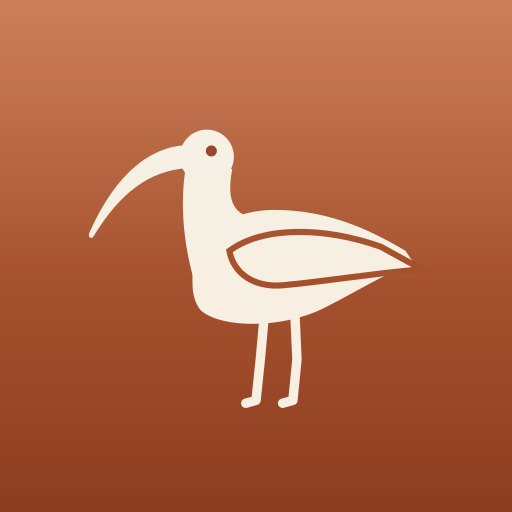

Most meeting notetakers
upload your call.
Whimbrel keeps it
on your computer.
1Wi-Fi off. Whimbrel records and transcribes on your computer. No bot joins.
2When the call ends: a summary, decisions, and what was promised.
3A page for every client: what you owe, and what you're owed.
4Ask your own history. A local model answers, and cites its sources.

Your client calls stay
on your computer.
- Recordings and transcripts are stored on your machine, not on our servers
- AI runs on your computer, or on a model you choose
- Free and open source, for Mac and Windows
Wi-Fi on